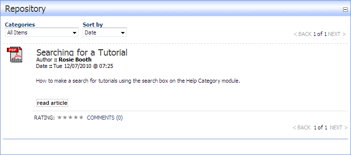

The Repository module can be used as a repository for articles. Each listing displays the article title, a thumbnail image of the author, the author's name, the date and time when the item was last updated, a summary of the article and a read article button that displays the full article in the module. A downloadable version of each article can optionally be uploaded and is available to users in the download role.
Categories, sorting, ratings and comments are enabled on this skin.

The Articles Repository